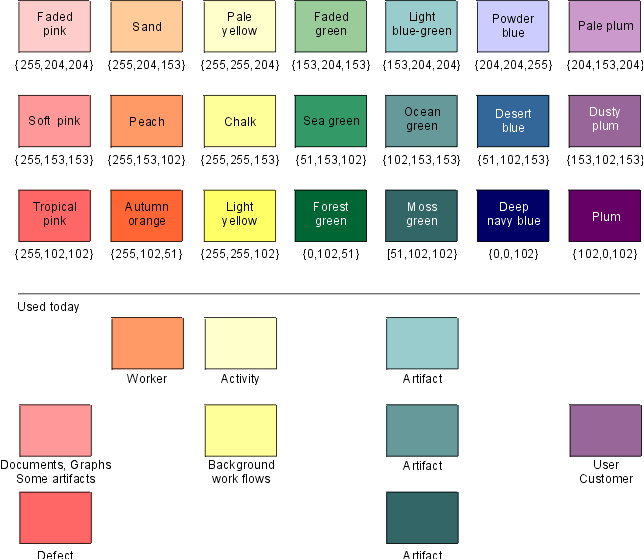

Process Engineer Toolkit >
User's Guide >
Working with Project Webs >
Authoring Process Web Pages >
Process Engineer Toolkit >
User's Guide >
Working with Project Webs >
Authoring Process Web Pages >
 Rational Unified Process Styleguide
Rational Unified Process Styleguide
Process Engineer Toolkit >
User's Guide >
Working with Project Webs >
Authoring Process Web Pages >
Rational Unified Process Styleguide
Toolkit:
|
| Banner headings | Heading 1.banner and Heading 2.banner Puts a colored background under the text. |
| Example heading | Heading 5 (H5) This should say "Example:". |
| Example | Indent using the "Increase indentation" button, next to the buttons for bulleted list and numbered list, or use Normal.example. |
| Picture text | Normal.picturetext |
| Definition | Normal.definition Used for definitions of modeling concepts. Do not use the predefined Definition for this purpose. |
| Table heading | Normal.tableheading Give table headings a bolder appearance. |
| Table text | Normal.tabletext Adjusts text to the left in tables. |
| a,b,c lists | Numbered List.alpha. Note that the FrontPage editor doesn't show the alpha characters, however, you can see them in the preview pane and in a "real" Web browser. |
| Bullets and Numbers | For bulleted and numbered lists, use the predefined Bulleted List and Numbered List. |
| Plus and Minus bullets | Bulleted List.plus and Bulleted List.minus Uses a plus or a minus sign for bullet. |
Microsoft Internet Explorer 4.0 supports all the style sheet features used in the Rational Unified Process.
Netscape Navigator 4.04 and 4.05 show the following signs that indicate a lack of support:
|
Defaults to red instead of the specified electric blue. |
|
The margin-specifier is ignored. To work-around, set table width to 85% if it's wider than the text and center alignment. |
|
No special bullets appear; that is, the specifier "list-style-image" is ignored, therefore regular bullets, and plus and minus bullets, do not show up. Default bullets are used. |
|
Lists with letters instead of numbers turn out as numbers. (Style Numbered List.alpha) |
|
The blue heading banners don't stretch all the way across, which is a cosmetic problem. |
 Rational Unified
Process and Rational Project Web Example do not use the Microsoft FrontPage® theme.
Rational Unified
Process and Rational Project Web Example do not use the Microsoft FrontPage® theme.
A theme governs navigation buttons, bullets, background, link colors, font styles, and sizes for regular text, headings, and more. Here are some of the features and disadvantages:
A FrontPage theme can be edited using the Theme Designer, which can be installed from the FrontPage CD.
It takes quite some time to re-apply a theme to a site of this size, because every file is visited. This means that all files must be checked out when re-applying a theme.
Theme files are kept in the Themes folder of the FrontPage installation folder.
To maintain compatibility with pre-defined themes, FrontPage dictates certain sizes for theme button images. If your buttons have other sizes, things will move around when you apply another theme. Although the current theme does not follow these guidelines, here are the required dimensions:
| Global navigation | 95 x 20 pixels |
| Horizontal and vertical navigation | 140 x 60 pixels |
| Up, Home, Next, Previous | 100 x 20 |
| Banner | 600 x 60 |
The actual image can be smaller than specified, but the bitmap needs to have the above dimensions.
When creating a new page in the Rational Unified Process, there are templates to get you started and help you stay with the style of the site. These templates need to be installed in the FrontPage Pages folder.
See Toolkit: Basic Authoring of Process Web Pages for more details.
In order to quickly return to the top of a web page, place a top bookmark there and, after each major heading, add the top-arrow with a link to the top.
Be consistent using uppercase or lowercase letters, periods, and commas within a set of bullets. Use the style best suited for the information.
Use bullets to list an unordered series of items other than a sequence of events or steps.
Use a comma-separated list where:
When you have a list of concepts, names, and so on, begin each bullet with a lower case letter. Don't use any commas, periods or other punctuation. For example:
There are four different models in the Rational Unified process:
Use numbered lists for ordered lists, such as a sequence of steps. Let each item be a full sentence.
Use style Numbered List.alpha to create an ordered list with a, b, c, ... This type of list is used if you'll be referring to any of the items in other text; for example, see item a. above.
Use bold to emphasize. Do not use italics. Italic fonts are hard to read online and may not work correctly in all Web browsers.
Whether to number headings or not is still a debate. Customers have requested a way to easily and uniquely reference sections of the material. Because of the dynamic nature of hypertext, numbered headings are difficult to interpret because the headings may be displayed outside of the context of the numbered document. To avoid confusion, use unique names for section headings and fully qualify section references using the name of the page as well as the name of the subsection if it's ambiguous.
Where you must number, such as in brief outlines for documents, use the following convention:
1 Heading level 1 (three spaces between the number and the heading title)
1.1 Heading level 2
1.1.1 Heading level 3
Heading level 4 - 6 (no numbering)
Heading levels deeper than 6 are not used.
An appendix is named using letters: Appendix A, Appendix B, Appendix C, and so on.
Examples described separately from the body text should have the Normal.example style. Of course things can be exemplified directly in the body text as well.
Every text with the Normal.example style should be preceded by a line with the text "Example:" as a Heading 5 (H5).
In the Rational Unified Process, we do not use the FrontPage component for page banners. One reason is that they require updating in the Navigation View, which is a central file. Another reason is that we do not need the Navigation View for anything else, such as navigation bars, and it leaves one less thing to worry about.
What do we use? There are two styles in the style sheet for the top title:
and
Heading 1.banner is used in major discipline chapters and other big titles having few words. Heading 2.banner is used for all objects in the process, because these usually have long names; for example, Activity, Role, Guideline. The templates show when they are used.
Unfortunately Netscape Navigator® and Microsoft Internet Explorer® treat background color for text differently. Internet Explorer colors the entire line from margin to margin, whereas Navigator only colors the area occupied by the text.
If you use the Navigation View and the FrontPage component for the banner, this might be good to know:
For pictures that go into printed documentation as well as online, do not use bitmaps. The exception to this rule is screen dumps. CorelDraw is used to draw the diagrams in the Rational Unified Process, which are exported from the CorelDraw format to the GIF-format.
When creating printed documentation, the original CorelDraw picture is inserted into the proper chapter in Microsoft Word.
Some pictures are smaller than the minimum size CorelDraw allows for exporting to GIF. These may need a CorelDraw version, as well as a separately made bitmap version. See the section titled "CorelDraw tips" for more information..
Icons, bullets, buttons, and so forth used only for online documentation can be created with a bitmap paint tool such as Image Composer, which comes with FrontPage, or CorelPaint. Adobe PhotoShop is also a current favorite. All of these tools require some experimentation to become familiar with them. Export pictures as GIF files. CorelDraw has a minimum size for exporting GIF files and, if it's not small enough, you have to scale the picture, which usually gives an ugly result.
If icons are to be included in the printed version too, you'll need corresponding CorelDraw icons for them.
This is not meant to replace the CorelDraw manual, but solely to share experience.
To export a picture to GIF, follow this procedure:
You can reuse a picture, even hotspot pictures, by placing them in an HTML-file by themselves then include them where you want them. This is useful for pictures that appear in more than one place.
It's very easy to create hotspots in pictures in FrontPage.
First of all, colors take up lots of space—think twice before using them!
Web browsers use 216 colors from what is known as the color cube. Using the RGB scheme, the 216 colors are made up from a triplet of {00, 51, 102, 153, 204, 255): in hex that is {00, 33, 66, 99, cc, ff}. These ones are already in CorelDraw's standard palette.
We use a subset of these colors to keep the online version harmonious from a color standpoint. In the picture below, you can see the colors in our subset, and how they're used. As you may notice, we aren't using all of them yet. The names of the colors are shown to help you choose the right ones in CorelDraw. The RGB value is also indicated.
There is a custom palette, with the colors below as well as black and white, that you can use as follows:

For headings in tables, use the style Normal.tableheading.
The theme rules that there should be no borders around tables. In fact, they are there, but they're white. If you really want visible borders, override with local settings.
A "thing" is a role, artifact, guideline, activity, and so on. A "thing page" is a page with an activity, role, artifact, guideline, and so forth.
|
Kind of references |
Examples |
Comment |
| To a 'thing page' | See Activity: Find Use Cases and Actors. | Alt 1: In the text. |
| See Guideline: Use Case. | Alt 2: In parenthesis. | |
| To a section in a 'thing page' | See the section titled "Timing" in Artifact: Software-Architecture Document. | Hyperlink to a page. The user is supposed to find the section. |
| Hyperlink references to a chapter in a manual. | See the section titled Overview in "Rational Unified Process—An Introduction". | The manual within quotation marks. |
| Non-hyperlink references. | See the section titled "Overview" in "Rational Unified Process—An Introduction". | The section within quotation marks, the manual in quotation marks. |
| In-text reference (preferred alternative) | Another technique is to perform role playing. See Role Playing, in which people act as business actors, business workers, and business entities. |
|
| In-text reference (second alternative) |
Another technique is to perform role playing, in which people act as business actors, business workers, and business entities. | Warning: Avoid this style of reference. |
General guidelines for cross-references are provided here:
File names should be no more than 20 characters long and should contain only alphabets, numbers, and underscores (_). Spaces and most symbols such as &, *, ; should not be used. It is also highly recommended that all file names be named using lowercase letters.
The current file naming convention uses the abbreviations listed in the following table, and an abbreviated name of the file contents, separated by an underscore. For example, the artifact Use-Case Model is called ar_ucm.htm and the modeling guideline for the Use-Case Model is md_ucm.htm.
We are considering a different way to name files to accommodate the requirements of unambiguous page referencing. Customers have expressed a need to reference items in the process in an easier way and it makes sense to use the same numbering or code in the file name, or at least some sort of obvious mapping.
| Concept | Abbreviation |
| concept | co_ |
| activity | ac_ |
| role | wk_ |
| artifact | ar_ |
| report | re_ |
| discipline introduction | int_ |
| workflow detail | wfs_ |
| workflow graph | wfsg_ |
| iteration workflow | iwf_ |
| guidelines (for models, model elements, and artifacts) | md_ |
| work guidelines | wg_ |
| check lists | ck_ |
| manual pages | im_ |
| overview | ovu_ |
| examples | ex_ |
| Microsoft Word templates | wd_ |
| Rational SoDA templates | so_ |
| HTML templates | wb_ |
| guideline overviews | mdov_ |
| introduction manual | im_ |
| tool mentors | tm_ |
There is a Microsoft Word template for creating manuals in print called rup.dot. We suggest that you create a separate folder for Rational Unified Process Microsoft Word templates named, for example, "RUP" in Microsoft Word's template folder, which is typically C:\Program Files\Microsoft Office\Templates. Place a copy of this template file and others there. For more information on using Microsoft Word, see Toolkit: Basic Web Page Authoring to find out how to, and how not to, use Microsoft Word for HTML authoring.
See Toolkit: Preparing for Publication for information on how to generate an index.
See the KeyWordIndex
for more information on how to enter keywords into Rational Unified Process
pages.
|
Rational Unified
Process
|